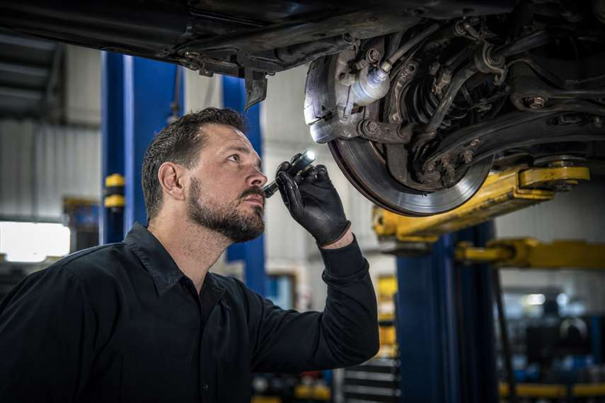

7 itens verificados na vistoria veicular em MS
Lista prática do que costuma ser avaliado antes da aprovação.
Ver PublicaçãoCNPJ 28.625.117/0001-80 — Portal mantido por empresa privada MADEIREIRA CAMARGO LTDA. Conteúdo exclusivamente editorial e informativo, sem intermediação de serviços ou documentos.
Organizamos o que motoristas de Mato Grosso do Sul mais buscam sobre consulta veicular, documentação e segurança no trânsito, em linguagem direta e revisada.
Acessar GuiaMotoristas em Mato Grosso do Sul enfrentam diariamente dúvidas sobre documentação, consulta cadastral e rotina de manutenção do veículo. Reunir essas respostas em um só lugar, com linguagem simples, é o objetivo deste portal.
Os artigos publicados aqui passam por revisão editorial antes de ir ao ar, priorizando informação verificável em vez de fórmulas genéricas. Não representamos nenhum órgão de trânsito nem prestamos serviço de regularização documental.
A manutenção deste portal é financiada pela atividade comercial da empresa mantenedora, sem custo ao leitor. Todo o conteúdo permanece gratuito e de acesso livre.
MADEIREIRA CAMARGO LTDA
CNPJ 28.625.117/0001-80
Quadra QI 2, Setor Industrial, Taguatinga, Brasília/DF, CEP 88348-583
Leitura densa sobre guia automotivo e rotina do motorista em Mato Grosso do Sul.

Lista prática do que costuma ser avaliado antes da aprovação.
Ver PublicaçãoPrazos, exames exigidos e cuidados por faixa etária.
Continuar LendoNosso guia automotivo cobre quatro blocos centrais para quem busca consulta veicular confiável em MS.
Como interpretar restrições cadastrais e situação de registro pelos canais públicos.
Ver dúvidas relacionadasItens avaliados antes da aprovação e cuidados para evitar retrabalho.
Ler artigo sobre vistoriaRenovação por categoria, exames exigidos e prazos por faixa etária.
Ler artigo sobre habilitaçãoTécnicas de direção defensiva e cuidados em vias de tráfego intenso.
Ler artigo sobre segurançaRespostas objetivas sobre consulta veicular e rotina do motorista em MS.
A consulta veicular permite checar restrições cadastrais, situação de licenciamento e histórico básico de registro do automóvel, sempre por meio dos sistemas públicos oficiais. Este portal explica como interpretar esses dados — não realizamos a consulta em nome do usuário.
O licenciamento segue calendário por final de placa, exigindo CRLV atualizado e ausência de pendências cadastrais. Detalhamos prazos e documentos em linguagem editorial, sem executar o procedimento pelo proprietário.
A vistoria costuma avaliar itens de segurança, identificação do chassi, sistema de freios e iluminação, entre outros pontos definidos por norma. Detalhamos essa lista no artigo dedicado ao tema.
A renovação segue prazos que variam conforme idade do condutor e categoria da habilitação, exigindo exames médicos e psicológicos periódicos. Explicamos o processo completo em artigo próprio.
Estudos de segurança no trânsito associam técnicas de direção defensiva a menor exposição a risco, especialmente em situações de tráfego intenso. Nosso artigo detalha os fundamentos dessa prática.
Geralmente são exigidos CRLV, documentos de identidade das partes, comprovante de endereço e recibo de compra e venda reconhecido em cartório, além de eventual vistoria conforme o caso.
Não. O Orientação Auto é uma publicação editorial independente. Explicamos processos de forma acessível, mas não emitimos documentos nem representamos nenhum órgão público.
Revisamos os artigos sempre que há mudança relevante em normas ou procedimentos, com data de publicação e de atualização visíveis em cada texto. Encontrou algo desatualizado? Use o formulário de contato.
Tem dúvida sobre algum artigo ou encontrou informação desatualizada? Escreva para nossa equipe editorial.